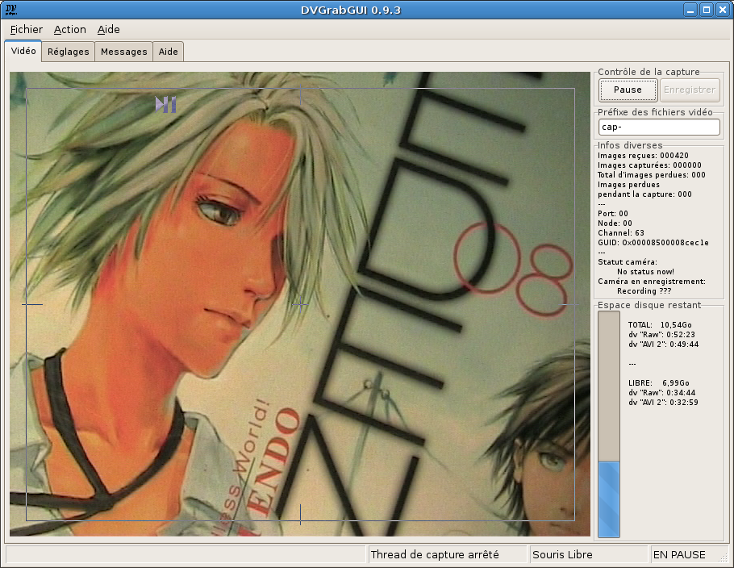

Pré: Référence → Menus --- ↑Home --- Suiv: Référence → Fenêtre Vidéo (mode "Petit")
DVGrabGUI 0.9.4
Référence → Fenêtre Vidéo
Il s'agit de la fenêtre principale, où vous pouvez visualiser le flux dv, et
démarrer/arrêter la capture…

-
Les quatre onglets supérieurs
-
La fenêtre "Vidéo"
C'est la fenêtre principale, où vous démarrez/arrêtez la capture dv,
et contrôlez ce que vous enregistrez.
-
La fenêtre "Réglages"
C'est là où vous réglez (quasiment) toutes les options de la capture
et de l'interface.
Fenêtre divisée en trois sous-onglets:
Capture,
Matériel, et
GUI.
-
La fenêtre "Messages"
Cette fenêtre affiche tous les messages envoyés par DVGrabGUI (ou
la wxWidgets utilisée!)
Notez que ces messages sont aussi écrits dans un fichier .log
(~/.dvgrabgui/dvgrabgui.log). Joignez ce fichier à tout
rapport de bug!
-
La fenêtre "Aide"
Affiche cette fenêtre!
Notez que cet onglet n'est disponible qu'avec wxWidgets 2.8; avec
wxWidgets 2.6, l'aide s'affiche dans une fenêtre séparée…
-
La fenêtre "Vidéo"
-
Affichage vidéo
Cette fenêtre affiche le flux dv quand le thread de capture est en
marche.
Elle vous permet de démarrer/arrêter le thread de capture (clic
gauche sur la moitié gauche de la fenêtre), et…
Elle vous permet de démarrer/arrêter l'enregistrement (clic gauche
sur la moitié droite de la fenêtre).
-
Barre d'état
-
Première zone: C'est la zone "d'info générale" (aide
des entrées de menu, …).
-
Seconde zone: Elle vous donne l'état du thread de
capture.
-
Troisième zone: Elle vous indique si votre souris est
capturée ou non.
-
Quatrième zone: Elle vous donne l'état de la capture
(enregistrement ou en pause).
-
Bouton Pause/Stop
Bouton pour démarrer/arrêter le thread de capture (même fonction que
la partie gauche de la fenêtre vidéo).
-
Bouton Enregistrer/Pause
Bouton pour démarrer/arrêter l'enregistrement dv (même fonction que
la partie droite de la fenêtre vidéo – désactivé quand le
thread de capture n'est pas démarré!).
s
-
Champ texte "Préfixe des fichiers vidéo"
Entrez ici le préfixe que vous voulez inclure dans tous vos noms de
fichiers capturés (par ex. capt- donnera des noms comme
capt-0001.avi, capt-0002.avi, etc.).
Notez que vous avez plus d'options sur les noms de fichiers dans la
fenêtre
des réglages.
-
Zone texte "Infos diverses"
Ce texte statique vous donne des infos "matérielles": images
reçues/capturées/perdues pendant la capture, Port/Node/Channel/GUID
de la connexion dv établie, et l'état de la caméra dv-rapportée…
-
Espace disque
Cette zone vous donne des infos sur l'espace disque total/restant
(pour le point de montage correspondant au dossier où vous avez
choisi d'enregistrer vos fichiers vidéo).
Pré: Référence → Menus --- ↑Home --- Suiv: Référence → Fenêtre Vidéo (mode "Petit")
(c) 2006, 2007, 2008 Bastien Montagne (montagne29 chez wanadoo point fr).
Projet hébergé sur sourceforge.net/projects/dvgrabgui.